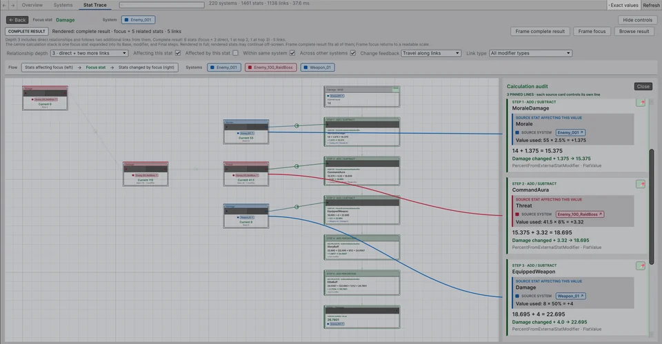

Independent project · Work in progress
StatSystemPro
Work in progress. This Unity Asset Store package is not yet released. Features, visuals and names may change.
A Unity package for runtime stats, modifiers and resources, with editor tools for inspecting dependencies and tracing calculations.
Stat Trace
Dependencies and calculations
The graph shows how stats and modifiers connect. The calculation audit breaks a selected value into its contributing stages, so the result can be inspected alongside the dependency graph.
These are current Unity editor captures from the package workspace.

Developer tooling
Inspect, audit and author
The editor tools expose tracked systems, grouped audit findings, reusable effect assets and stat profiles for inspection while building a project.

Runtime sample
Systems in a playable context
The standalone sample connects runtime stat changes to equipment, effects, resources and other interactive scenes.

Capture gallery
More of the working package
Use the thumbnails or keyboard controls to inspect editor and sample captures. Nothing auto-advances.


More work